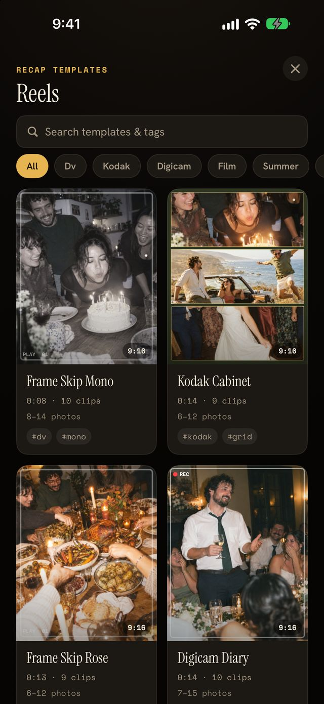
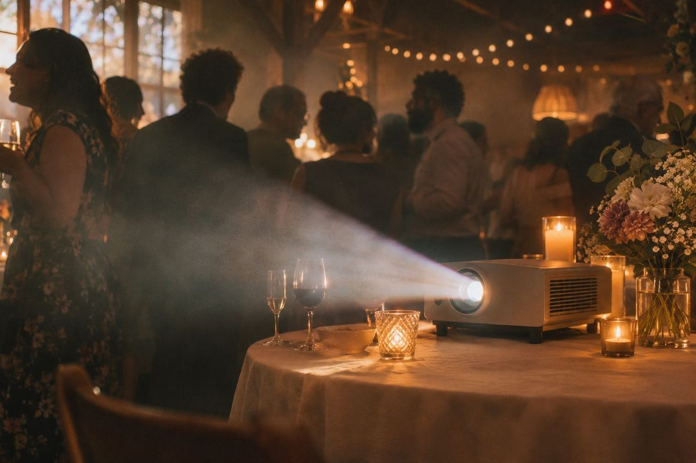

Wedding Slideshow Ideas: 20 Ways to Make It Worth Watching
Story ideas, family and friends, the morning after, rehearsal games and what to skip.

Short answer: The best wedding slideshow ideas give guests something to react to: then-and-now photo pairs, side-by-side childhoods that meet in the middle, a map of where you met, a chapter for friends, short voice notes from family and a last run of photos of the guests themselves. Keep the sit-down version under about 8 minutes and put the extras on a loop.
A slideshow works when the room laughs, points and says “that’s me.” Here are 20 wedding slideshow ideas, each with why it works and how to pull it off, followed by where to play the slideshow (rehearsal dinner, cocktail hour, reception or the morning-after brunch) and what to leave out.
Wedding slideshow ideas for telling your story
1. Then-and-now pairs
Why it works: the side-by-side gets an instant laugh, then an “aww.” How: pick four to six childhood photos and recreate them as adults: same pose, same angle, ideally the same couch or the same props. Put each pair on one slide and give it 6 or 7 seconds, because people need time to compare.
2. Parallel childhoods
Why it works: guests watch two separate lives head toward each other. How: alternate photos of the two of you at matching ages (both at five, both on the first day of school, both at graduation), then switch to full screen for your first photo together. It works best when the childhood chapter runs on one song.
3. A “how we met” map
Why it works: it makes the geography obvious, especially if you grew up far apart. How: screenshot a map, then add pins and a line in your slideshow app: two hometowns, where you met, your first apartment, where you got engaged. Hold it for 6 to 8 seconds, or animate the line one stop at a time.
4. The firsts, with dates
Why it works: captions help guests place older photos; a planner quoted in The Knot’s slideshow guide recommends adding the location and the date or year. How: use one caption style throughout, in the same corner of the screen: “First date · Chicago · 2019.” Keep captions to about five words.
5. The proposal from both sides
Why it works: one of you planned it and one of you had no idea, and guests love the backstage view. How: show the planning photos first (the ring, the reservation, the friend hiding in the bushes with a camera), then the moment itself. Hold the ring photo longer than anything else in the show.
6. Past, present and future
Why it works: it gives the slideshow a clear three-act shape, and a planner quoted by The Knot calls it a popular theme. How: childhood and early years, then your life together, then a short future chapter: the trip you’re planning, the dog you’ve already named, or a final slide that just says “To be continued.”
7. The year-by-year flip
Why it works: it’s fast and satisfying, like a flipbook. How: choose one photo of the two of you from every year together, crop them so your faces sit in the same spot on screen, and show each for 2 seconds with the year as a caption.
Ideas that put family and friends on screen
8. Meet the families
Why it works: half the room doesn’t know the other half. How: one slide per family with a group photo and first names, so guests can put names to faces before the dance floor opens.
9. Your parents’ and grandparents’ wedding photos
Why it works: it shows the generations that led to this day, and it tends to land with older relatives. How: ask for wedding photos from both families, scan them, and show them in date order with names and years, ending on your engagement photo.
10. A friends chapter by era
Why it works: every friend group gets its moment, so nobody feels left out. How: group photos by era (school, college, first jobs, the group chat) with four to six photos each, set to a song they would sing along to. Our wedding slideshow songs list has a friends-and-family section.
11. Voice notes over photos
Why it works: hearing a grandparent’s voice lands harder than reading a caption. How: ask five to eight people for a 15-second voice memo answering one question, like “What did you think the first time you met them?” Drop the memos into your editor as audio, lower the music under each one, and show that person’s photos while they speak. You can also record your own narration: iMovie on iPhone has a voiceover tool with a 3-second countdown, and PowerPoint can record narration slide by slide and export it with the video.
12. Messages from people who couldn’t come
Why it works: it brings faraway friends into the room. How: ask for 10- to 20-second clips filmed sideways on a phone, and use two or three at most so the show keeps moving.
13. One quiet slide for people you miss
Why it works: it honors them without changing the mood of the whole night. How: one photo and a name, placed in the middle of the show rather than at the end. Check with close family first.
14. End on the guests
Why it works: the last thing people see is themselves, which turns the slideshow into a thank-you. How: close with photos of the two of you with the people in the room, then a final slide: “Thank you for being here.”
Ideas for the wedding day and the morning after
15. A same-day slideshow
Why it works: guests see the day they’re still living, hours after the ceremony. How: ask your photographer whether they offer one. As SLR Lounge describes it, some quickly pick 50 to 100 images from the day, edit them while guests eat dinner, then play the slideshow later in the reception, sometimes on a loop. You’ll need a screen guests can see from their seats and a gap in the photographer’s schedule.
16. A getting-ready teaser
Why it works: most guests never see the morning. How: ask a friend to take 10 to 15 photos while you both get ready, and open the cocktail-hour loop with them.
17. A guest-made slideshow at the brunch
Why it works: your guests saw a hundred moments you missed: the toast from the back of the room, your grandmother on the dance floor, the after-party. How: collect everyone’s photos during the wedding, then play them on a TV at the post-wedding brunch. A shared album or upload link works if guests remember to use it; a shared camera with a morning reveal makes the brunch the moment everyone sees the photos for the first time.
How to do it with Filmsera
Filmsera is a shared disposable camera app for iPhone. Create a film for the wedding, put the QR code on the tables, and guests join from the free app or their phone’s browser with no app or account. Photos stay hidden until the reveal, so use the Custom option to set it for brunch time. (Every preset, from Tonight to In 3 days, develops at 9 p.m.) Our guide to choosing a reveal time covers the trade-offs.
At the reveal, the whole roll appears for everyone at once, each photo tagged with who took it, and a recap reel builds itself and starts playing. For the TV, save the photos you want to your iPhone, play them with the Photos app’s slideshow over AirPlay or a cable, and finish on the reel.
Be clear about what you get: the recap is a short vertical reel, usually 10 to 30 seconds, not a long slideshow, though the full album is there to scroll through. You need the iPhone app to host, browser guests take photos only, and a free film covers up to 10 guests, so most weddings need a one-time pass for that film. Free recap exports are 480p with a watermark (HD needs Filmsera Pro or a film pass), and on a free film, photos stay on Filmsera’s servers for 30 days after the reveal, so save your favorites. More on setup is on our Filmsera for weddings page.

Filmsera keeps every guest’s photos sealed until the reveal, then opens the whole roll and a recap reel at once, right on time for brunch. Get Filmsera on the App Store
Fun ideas for a rehearsal dinner slideshow
18. Baby-photo guessing
Why it works: it turns the screen into a game. How: number the wedding party’s baby photos, let tables guess, and reveal the names on the next slide.
19. “How well do you know the couple” trivia
Why it works: a rehearsal dinner crowd knows enough to play. How: five to eight question slides with a photo clue each (“Where was this taken?”), each followed by an answer slide.
20. The outtakes reel
Why it works: blinks, bad selfies and engagement-shoot bloopers get the loudest laughs. How: keep it to 30 to 60 seconds with fast cuts, and keep it kind: only outtakes of the two of you, or of people who said yes.
Where to play your wedding slideshow

| Event | Best format | Length | Sound |
|---|---|---|---|
| Rehearsal dinner | One sit-down showing; the place for games and roasts | 8 to 10 minutes | Music on |
| Cocktail hour | A loop on a TV near the bar | 10 to 20 minutes, repeating | Quiet or none |
| Reception | One showing, often right after the toasts | 5 to 8 minutes | Through the DJ’s system |
| Brunch | The guests’ photos from the night | 3 to 5 minutes, or a loop | Low |
| Online | A vertical reel | 15 to 60 seconds | Music you’re allowed to post |
You don’t always need a projector. A planner quoted by The Knot notes that a big-screen TV works in many cases, and a TV is easier to see in a bright room. For the numbers behind these lengths, see how long a wedding slideshow should be.
What to leave out of a wedding slideshow
- Exes, including photos where an ex was cropped out. A stray shoulder tells the story anyway.
- Anything that embarrasses someone else. If you’re not sure, ask them.
- Inside jokes only three people in the room will get.
- Photos you wouldn’t show your grandparents, because they’ll be in the second row.
- Tiny or blurry group shots that turn into specks on a projector.
- Five photos of the same moment. Pick the best one.
- Breakup songs that sound romantic. Listen to every lyric first.
- Extra minutes. A sit-down slideshow that runs past about 8 minutes starts to feel like a delay.
Where to find a wedding slideshow template
Start with what you already have. Photos on a Mac includes slideshow themes that set the fonts, text position and transitions. iMovie on iPhone has a Magic Movie feature that drafts a video from an album, plus storyboards: premade templates with suggested titles, transitions and music. Canva has a collection of wedding slideshow templates. Whichever you pick, swap every stock photo, delete the slides you don’t need, keep one transition style and replace fancy fonts with something guests can read from the back of the room. Our step-by-step guide to making a wedding slideshow compares the tools and their prices.
FAQ
What should be included in a wedding slideshow?
Photos of each of you growing up, how you met, your years together and the proposal, plus your families and friends. Most good slideshows end with photos of the guests in the room. Add short captions with places and years for older photos, a song change at each big chapter break, and a final slide that thanks everyone for coming. Leave out exes, inside jokes and anything that would embarrass someone else.
When is the best time to show a wedding slideshow?
For a single sit-down showing, right after the toasts works well, because guests are already seated and facing the front. If you’d rather not stop the night, run it as a loop during cocktail hour or dinner. Rehearsal dinners suit a longer, more playful version, and the morning-after brunch is a good place for a slideshow of the guests’ own photos.
What’s the difference between a rehearsal dinner slideshow and a reception slideshow?
The rehearsal dinner crowd is smaller and closer, so the slideshow can run longer, around 8 to 10 minutes, and include games, outtakes and inside stories. The reception slideshow plays to everyone, including guests who barely know you, so keep it to about 5 to 8 minutes, focused on your story and the people in the room.
Can guests add their own photos to the slideshow?
Yes. Before the wedding, ask for old photos through a shared album or upload link. For photos from the wedding itself, a shared camera app like Filmsera gathers everyone’s shots in one film, keeps them hidden until the reveal, then shows the whole roll and a short recap reel at once. That makes a slideshow of the guests’ photos easy to play at the brunch.
How do you make a same-day wedding slideshow?
Ask your photographer, since it depends on their workflow. Some offer it: they pick 50 to 100 images from the ceremony and portraits, edit them while guests eat dinner, then play the slideshow later in the reception, sometimes on a loop. You provide a screen or TV guests can see and a power outlet, and agree on the timing in advance so it fits around dinner and the toasts.
Should you put exes in a wedding slideshow?
No. Even a cropped photo can be recognized, and there is no upside for anyone in the room. If a great group photo includes an ex, pick a different one or leave that moment out. The same goes for photos from past relationships on trips or holidays: the slideshow is about the two of you and the people who are here now.
Written by the Filmsera team
Filmsera is a shared disposable camera app for iPhone: create a film for your event, let guests join by QR code from the app or their phone's browser, and open the whole roll together at the reveal. Download on the App Store →
Photos in this article are illustrations created for Filmsera, not customer photos. App screenshots are from Filmsera on iPhone.